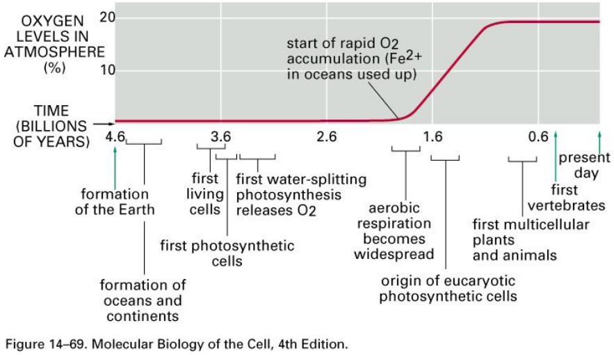
4 Photosynthetic Light Reactions
Prof. Oliver begins by listing some common terms:
Photosynthesis
This is a chemical reaction that happens in plants. In this reaction, carbon dioxide from the surrounding air is taken in to the plant; the sun’s light energy is then used to turn CO2 into biomass.
Oxygenic Photosynthesis
This is just photosynthesis that uses water as electron donors throughout the reaction. This water is ultimately released as oxygen gas.
Anoxygenic Photosynthesis
This is just photosynthesis that uses other electron donors apart from water. Oxygen doesn’t get released here.
Phototrophy
This is when organisms convert light energy into chemical energy for growth.
The general formula for photosynthesis is:
\[\begin{equation} CO_2 + 12H_2O \stackrel{\text{light}}{\longrightarrow} C_6H_{12}O_6 + 6O_2 \end{equation}\]
The above graphic shows the general history of photosynthesis.
4.1 Photosynthesis Basics
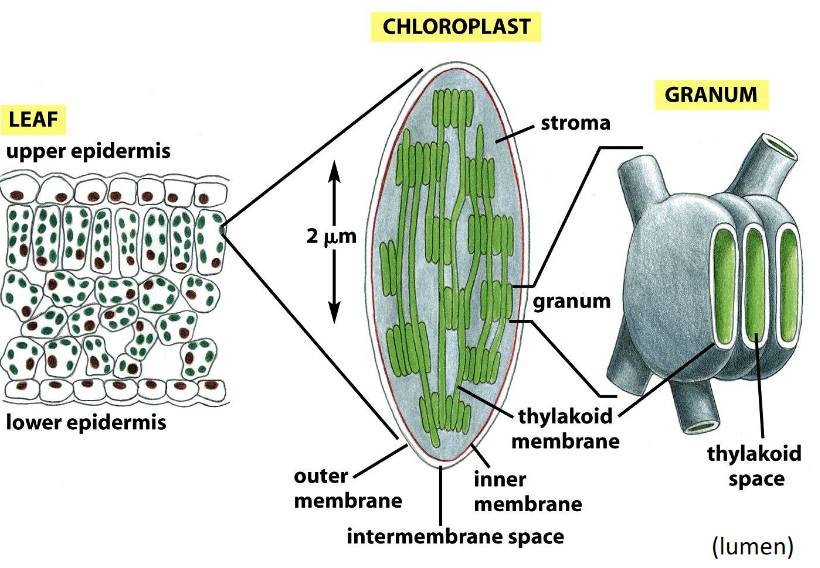
Photosynthesis happens in an area called the chloroplast. Chloroplasts are structures that are found within leaves and they contain smaller structures called granum: stacks of thylakoids.
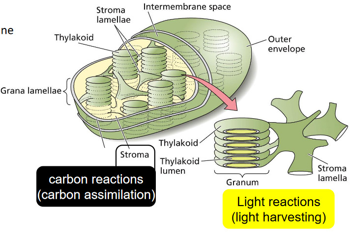
The thylakoid membranes inside the chloroplast may or may not be stacked. If these membranes are stacked, then they are called granum, but there is one thing to note: the reactions that happen in photosynthesis are found in the thylakoid’s membrane.
For instance, the following reactions happen in the membrane:
- Light harvesting reactions
- Electron transport
- Oxygen production
- ATP and NADPH production
The stroma - on the other hand - just refers to the space in the chloroplasts. This is where the glucose in photosynthesis is produced and also where CO2 is gathered.
4.1.1 Evolution of the Chloroplast
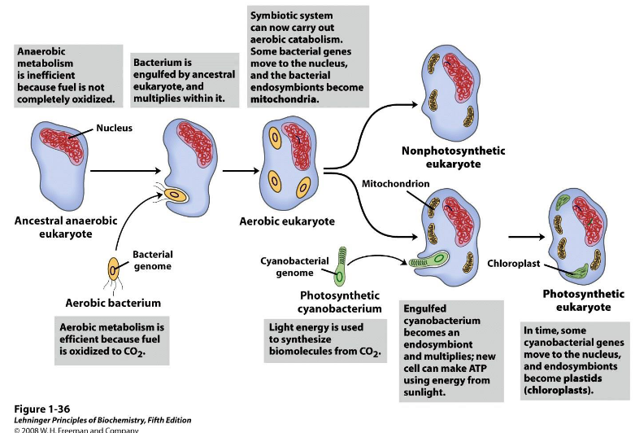
A lot of scientists think that the chloroplasts originally evolved from another kind of organism called the cyanobacterium.
4.2 Steps in Photosynthesis
4.2.1 Light Absorption
First, light needs to be absorbed by pigments (that exist in a specific form) that are found in light harvesting complexes (i.e., LHCs). This absorbed energy is then relayed to where photosynthesis actually occurs.
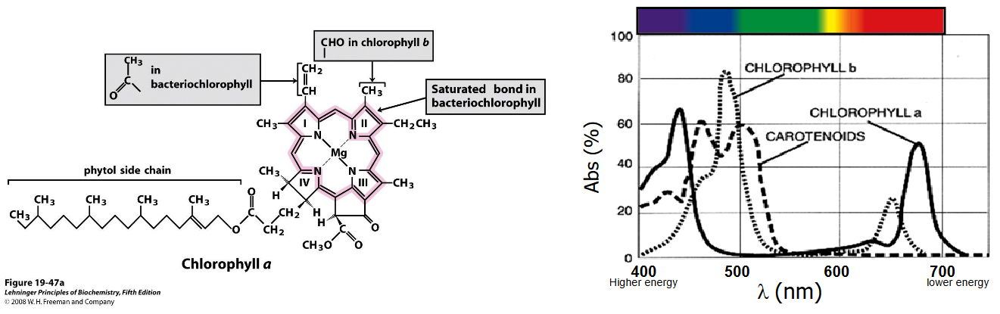
Two pigments - chlorophyll a and chlorophyll b - are used to capture light in photosynthesis.
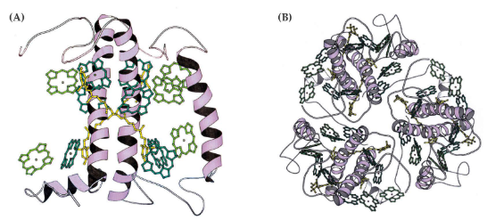
At least in the memrbane protein LHCII, the said pigments are arranged into a sort of antennae. Scientists think that each 25 kDa protein above binds 14 chlorophylls and also four things called xanthophylls.
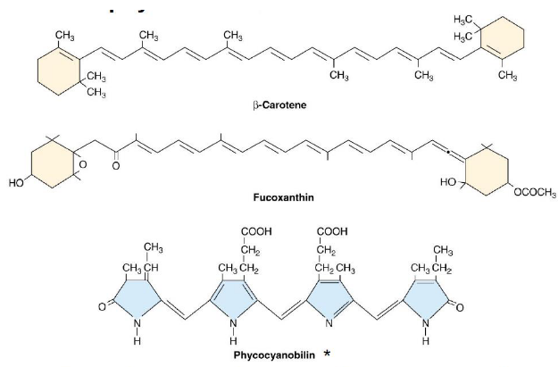
Sometimes, pigments called accessory pigments can help pick up light that are otherwise not absorbed by chlorophyll. Because of this, photosynthesis is able to become more efficient as these pigments can also transmit the energy to where photosynthesis happens.
The cool thing about these pigments too is that they help protect organisms against intense or damaging sunlight.
4.2.1.1 Absorbing Light
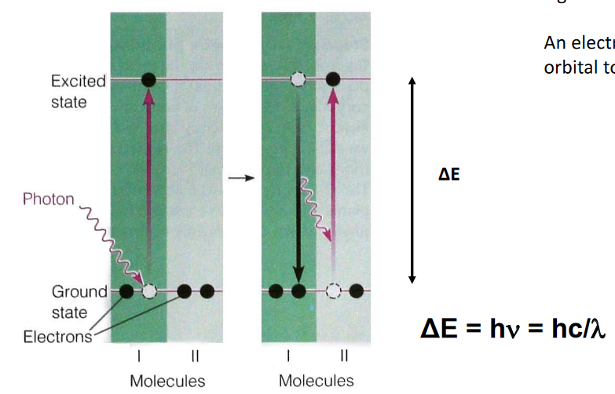
When light is absorbed, this causes a molecule to become “excited” and go to a higher energy state.
The difference between this “excited” and normal state is referred to as \(\Delta E\) - the difference can be calculated using:
\[\begin{equation} \Delta E = h\nu = \frac{hc}{\lambda} \end{equation}\]
Where \(h\) is Planck’s constant, \(c\) is the speed of light, and \(\lambda\) is the wavelength of light absorbed.
4.2.1.2 Energy Levels in the Chlorophyll
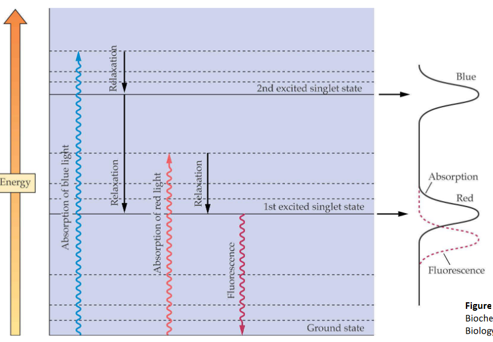
When an electron is excited inside the chlorophyll, the following actions can happen:
Fluorescence
Here, an excited electron releases a photon and returns to its original state.
Returning to the Ground State
When this happens, energy that the electron has is lost as heat to the environment.
Energy Transfer
The energy that was lost as heat is then taken up by another electron
Photochemistry
This loss in energy causes chemical reactions to happen.
4.2.1.3 Where is Light Absorbed?
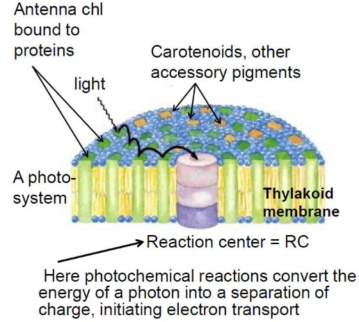
When light is captured, it is captured on the antennae before this light energy is sent to the reaction centers.
Prof. Oliver also lists a few terminology:
Photosystem
This is a structure that is made out of a reaction center (i.e., RC) and an antenna or light harvesting complex.
Reaction Center (i.e., RC)
These help convert light energy turn into chemical energy. These are also just protein bits (i.e., subunits) that have things called cofactors attached to them that are found in the middle of the photosystem.
Antenna or light harvesting complexes
These structures have chlorophyll and other accessory pigments; they surround the RC and help absorb light and sent it to the RC.
4.2.2 Charge Separation
Once pigments absorb energy, this energy needs to be sent over in a way called resonance energy transfer. What this basically means is that after the light energy goes from the antennae to the reaction center, an electron is transferred over to the membrane and to a donor, and this causes something called photoinduced charge separation.
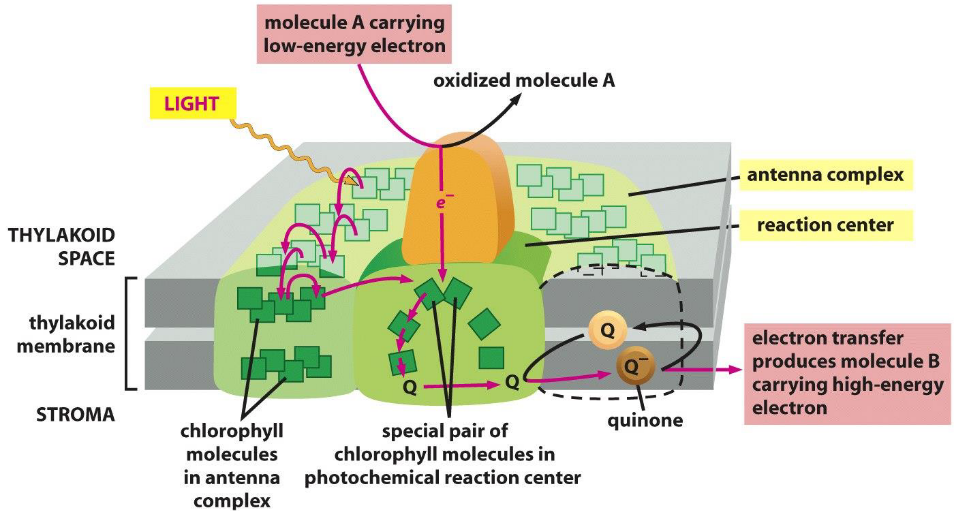
The only reason this is possible is because electron transfer is a lot faster (i.e, 3 ps).
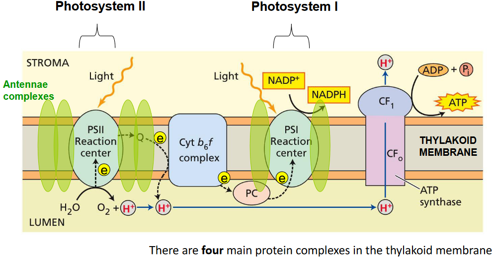
That said, there are also two kinds of photosystems in oxygenic photosystems. These two kinds of photosystems are related to the way that prokaryotes perform anoxygenic photosynthesis.
4.2.3 Electron Transfer
This step moves electrons across a chain to do two things: to make a proton motive force and to also make NADPH.
All electron transfer reactions involve something called oxidation reduction reactions. In the case of the equation for photosynthesis:
\[\begin{equation} 6CO_2 + 12H_2O \stackrel{\text{light}}{\longrightarrow} C_6H_{12}O_6 + 6O_2 \end{equation}\]
The reducer (i.e., reducing species) is the water molecule H2O and one to become oxidized is the carbon dioxide (i.e., the CO2).
We use the symbol \(\Delta G\) to illustrate the tendency of redox reactions to proceed. This symbol is also called the free energy.
4.2.3.1 Free Energy and Redox Potentials
The value of \(\Delta G\) is given by the following equation:
\[\begin{equation} \Delta G = -nF\Delta E^\theta \end{equation}\]
The higher the potential that something has, this means that it is a great reducing agent. This also means that this something also has a greater tendency to accept electrons (and vice versa).
Hence, electrons will willing flow from substances with low tendencies to accept electrons to substances with high tendencies for electrons.
4.3 Z-Scheme of Photosynthesis
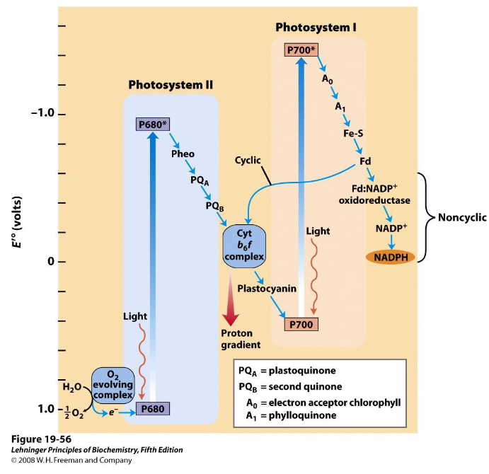
The above graphic illustrates two main kinds of electron flow in photosynthtesis:
Non-cyclic electron flow
Here, electrons go from water to something called NADP+ to form NADPH and oxygen gas. In doing so, something else called a proton motive force (i.e., PMF) is made, and this PMF is used to make ATP.
Cyclic electron flow
The electrons that came from the water molecule (that were obtained using light energy) stay in the system, but its energy is used to pump protons to make the PMF. This causes ATP to be made.
In this sort of electron flow, electrons flow from ferredoxin back to the plastoquinone pool and only do so to produce ATP.
This sort of electron flow helps the cell adjust the ratio of NADPH and ATP according to its requirements.
4.3.1 Why Two Kinds of Photosystems in Photosynthesis?
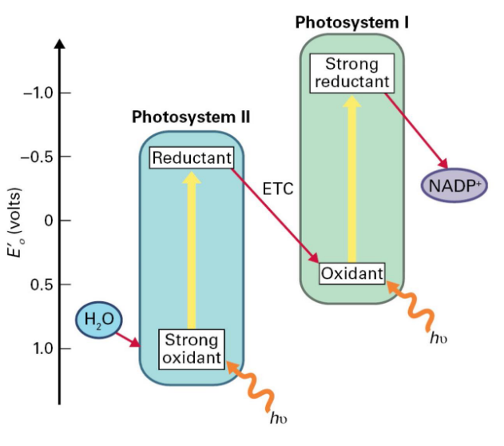
In the second photosystem - PSII - there is a strong oxidant and a weak reductant that is able to split water into oxygen gas to also get the electrons.
However, in the first photosytem - PSI - there is a stable reductant (that can turn NADP+ into NADPH) and a weak oxidant.
4.3.1.1 Photosystem II
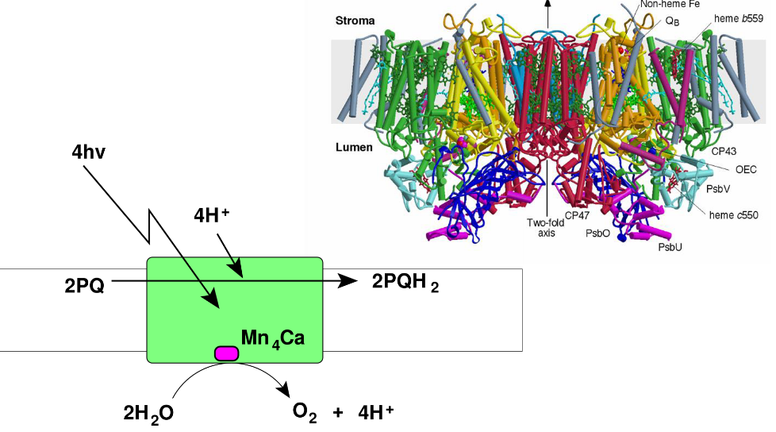
The PSII does a pretty important job - it splits water to produce O2 gas and also transfers electrons to something called a plastoquinone (i.e., PQ) pool.
The reaction center is called P680 and it’s found in the reaction center of the PSII photosystem. The oxidized form of P680 - P680+ - is the most oxidizing molecule in Biology.
4.3.2 Producing Oxygen
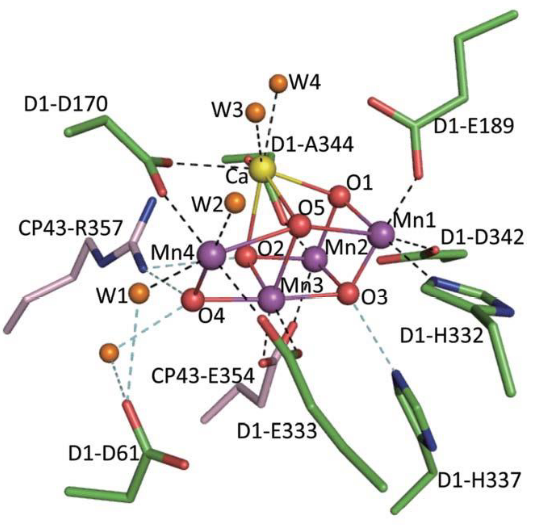
This happens in the Mn4CaO5 cluster that’s found on the lumen side of the thylakoid’s membranes. The managnese atom in the middle of the complex helps accumulates negative charges.
4.3.3 Z-Scheme in the Membranes
The proton motive force (i.e., PMF) is made using a series of reductions and oxidations. This PMF is also used to make ATP using an enzyme called chloroplast APT synthase.
4.4 Water Oxidation
The following chemical reaction happens when water is oxidized:
\[\begin{equation} 2H_2O \longrightarrow O_2 + 4H^+ + 4e^- \end{equation}\]
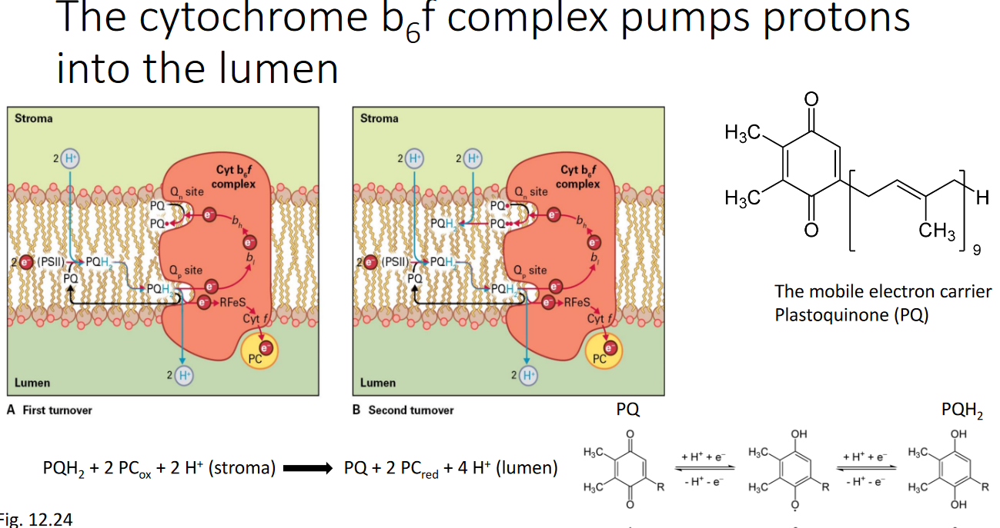
There is a protein called the cytochrome b6f complex that pumps protons into the lumen - the intermembrane space of the chloroplasts.
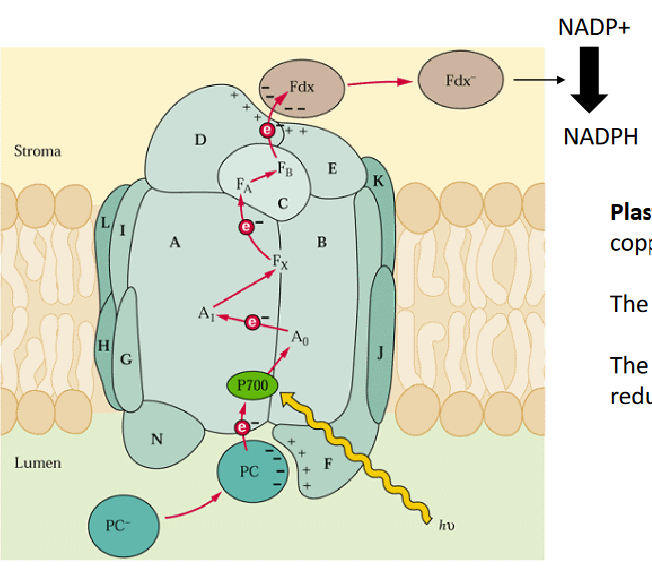
There is a protein called plastocyanin - this is a small water soluble that has copper and it’s found in the lumen of the chloroplasts. The reaction center in the PSI (i.e., Photosynthesis I complex) is called the P700 complex.
That said, the electron is passed onto another protein called ferrodoxin. Then, there’s another enzyme called Ferredoxin-NADP+ reductase reduces NADP+ into NADPH.
4.4.1 ATP Synthase
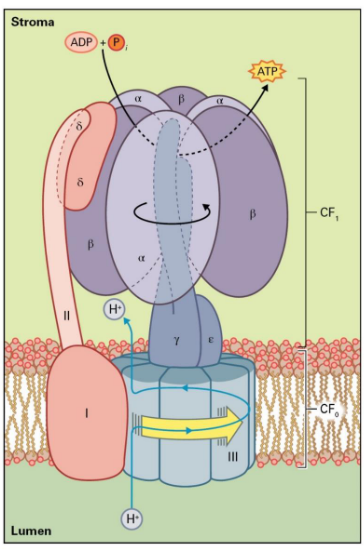
APT Synthase performs the following chemical reaction:
\[\begin{equation} ADP + Pi \rightarrow ATP \end{equation}\]
Like the previous points mentioned, the above reaction is driven by the proton motive force that is generated by the light reactions of photosynthesis.